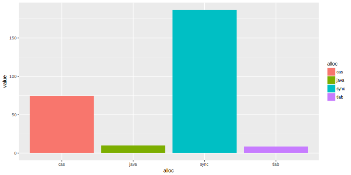

RMarkdown, R и ggplot
Данная статья не является ни документацией, ни рассказывает что-то принципиально новое, её стоит рассматривать как обзорную или как шпаргалку.
Преамбула
Конференция это прежде всего доклады, и далеко не последнее место занимает то, как оформлены слайды доклада.
Безусловно, есть докладчики, которые могут не смотря ни на что, провести доклад даже без единого слайда, но всё же они как правило хорошо дополняют повествование. Одним достаточно накидать мемасиков в доклад и дело готово, другим обязательно надо вставить код, причём на ассемблере (кто не в курсе ещё - JPoint - это конференция по java), и есть ещё те, кому надо показать графики. Впрочем встречается и их комбинация.
Пожалуй известные средства для создания слайдов это:
- PowerPoint, и вариации в лице LibreOffice Impress, Apple KeyNote
- облачные вариации с тем же подходом - Google Slides
- LaTeX
- и относительно новый (для меня) RMarkdown
И если первые два по своей сути представляют бинарные форматы, а облачные Google Slides и ко ещё требуют наличие интернета, что является некоторым неприятным ограничением (во время поездок и перелётов), то последние два - и оффлайновые, и исключительно текстовые, а значит можно хранить историю всех изменений в git/hg/на ваш вкус. Кроме того, область применения далеко не ограничена только слайдами.
LaTeX формат с историей - много написано и сказано, а вот RMarkdown молодой, даже немного хипстерский, но без подворотов.
Markdown
Markdown это облегченный язык разметки, созданный с целью написания максимально читаемого и удобного для правки текста. Markdown является и лёгким для понимания, и легким для чтения даже без каких-либо трансформаций.
Сравните сами: _курсив_ это курсив, **сильное выделение** это сильное выделение, и многое другое - более подробно описано в Markdown cheatsheet.
Markdown поддерживают github, habrahabr, sublime, jira (имеет схожий синтаксис), и многие другие.
R
R — язык программирования для статистической обработки данных и работы с графикой.
Как правило это останавливает - это очень сложно, это математика, и это не надо - но никто же заставляет использовать всю доступную функциональность, пожалуй самый простой и наглядный - это графики и визуализация.
Хотя часто для того, чтобы построить какой-либо график используют Excel, он с большим трудом справляется, когда количество данных приближается уже к миллиону. Тогда как для R это не является какой-то сложной задачей.
Данные и графики
Оставим за кадром баталию, что же лучше - таблицы или графики. Вопрос вкуса.
Для построения графиков используем расширение ggplot2.
Устанавливаем модуль для R :
install.packages("ggplot2")
Но чтобы строить графики нужны данные, и разумно хранить их отдельно от представления, например, в csv формате - опять же - простой текстовый формат.
Мои данные - это результаты полученные при помощи jmh для моего доклада Внутрь VM сквозь замочную скважину hashCode. Мне нравится стиль, используемый Алексеем Шипилёвым: записывать результаты benchmark'а в виде комментария в начале файла - grep-n-sed и мы имеем csv-файл.
данные csv/allocations.csv:
pos,alloc,value,error
10,single-threaded,2.836,0.285
20,java,9.878,2.676
28,epsilon,75.289,23.667
30,sync,186.672,21.195
40,cas,74.721,0.192
50,tlab,8.506,1.849
55,javaHashCode,60.270,12.318
57,readHashCode,7.296,0.316
Формируем таблицу данных (data frame) из csv-файла - по-умолчанию, считается, что в файле есть заголовок - это нам поможет при обращении к отдельным колонкам
```{r}
df = read.csv(file = "csv/allocations.csv")
```
если хотим отфильтровать, н-р, по конкретным значениям в колонке alloc
df <- subset(df, alloc == "cas" | alloc == "java" | alloc == "sync" | alloc == "tlab" )
Бары / столбики
Для начала необходимо задать схему соответствия переменных (aes) из таблицы данных - отображать будем значение от типа, в нашем случае типа аллокации, цвет бара будет выбран также на основе типа аллокации.
ggplot(data=df, aes(x=alloc, y=value, fill=alloc))
Отображать будем в виде столбиков ( bar chart ) + geom_bar()
ggplot(data=df, aes(x=alloc, y=value, fill=alloc))
+ geom_bar(stat="identity")
результат: 
повернём систему координат (из вертикальных в горизонтальные бары) опцией + coord_flip()
ggplot(data=df, aes(x=alloc, y=value, fill=alloc)) +
geom_bar(stat="identity") +
coord_flip()
добавим ошибку изменений + geom_errorbar() (помните, у нас в csv-файле есть колонка error):
ggplot(data=df, aes(x=alloc, y=value, fill=alloc)) +
geom_bar(stat="identity") +
coord_flip() +
geom_errorbar(aes(ymin = value - error, ymax = value + error), width=0.5, alpha=0.5)
для наглядности стоит добавить значения рядом с баром + geom_text() (логично, что текстом будет value)
ggplot(data=df, aes(x=alloc, y=value, fill=alloc)) +
geom_bar(stat="identity") +
coord_flip() +
geom_errorbar(aes(ymin = value - error, ymax = value + error), width=0.5, alpha=0.5) +
geom_text(aes(label=value))

добавим лоска подписи + geom_text():
- используем функцию для изменения подписи значение ± ошибка - label=base::sprintf("%0.2f ± %0.2f", value, error) (привет старый добрый sprintf и шаблоный форматирования %f!)
- поиграемся с горизонтальным hjust и вертикальным vjust расположением подписи
- изменим размер шрифта size и начертание fontface подписи
ggplot(data=df, aes(x=alloc, y=value, fill=alloc)) +
geom_bar(stat="identity") +
coord_flip() +
geom_errorbar(aes(ymin = value - error, ymax = value + error), width=0.5, alpha=0.5) +
geom_text(aes(label=base::sprintf("%0.2f ± %0.2f", value, error)), hjust=-0.1, vjust=-0.4, size=5, fontface = "bold")
- подкрутим тему + theme_classic()
- уберём легенду + theme(legend.position="none")
- добавим подписи + labs(title = .. , x = .. , y = ..) и шрифты для осей + theme(axis.text.y = ..)
ggplot(data=df, aes(x=alloc, y=value, fill=alloc)) +
geom_bar(stat="identity") +
coord_flip() +
geom_errorbar(aes(ymin = value - error, ymax = value + error), width=0.5, alpha=0.5) +
geom_text(aes(label=base::sprintf("%0.2f ± %0.2f", value, error)), hjust=-0.1, vjust=-0.4, size=5, fontface = "bold") +
labs(title = "@Threads( 4 )", x = "", y = "ns/op") +
theme_classic() +
theme(axis.text.y = element_text(size = 16, face = "bold")) +
theme(axis.title = element_text(size = 16, face = "bold")) +
theme(legend.position="none")

и для придания финального лоска
- специфицируем цвета + scale_fill_manual()
- удалим зазор между вертикальной осью и баром + scale_y_continuous() и немного расширим диапазон значений, чтобы и ошибка помещалась, и подпись
- и ещё зафиксируем порядок баров, согласно колонке pos: x=reorder(alloc, -pos)
ggplot(data=df, aes(x=reorder(alloc, -pos), y=value, fill=alloc)) +
geom_bar(stat="identity") +
coord_flip() +
geom_errorbar(aes(ymin = value - error, ymax = value + error), width=0.5, alpha=0.5) +
geom_text(aes(label=base::sprintf("%0.2f ± %0.2f", value, error)), hjust=-0.1, vjust=-0.4, size=5, fontface = "bold") +
scale_fill_manual(values=c(java'='#a9a518','sync'='#fa8074', 'cas'='#00b3f6', 'tlab'='#e67bf3')) +
labs(title = "@Threads( 4 )", x = "", y = "ns/op") +
theme_classic() +
scale_y_continuous(limits=c(0, max(df$value) + 40), expand = c(0, 0)) +
theme(axis.text.y = element_text(size = 16, face = "bold")) +
theme(axis.title = element_text(size = 16, face = "bold")) +
theme(legend.position="none")
tip: можно сохранить график в файл + ggsave("allocations.svg"), но не стоит злоупотреблять векторным форматом, если на графике много точек - сохраняйте в растр, н-р png.
install.packages("svglite")
Отдельно стоит отметить цветовую палитру, используемую по-умолчанию: выбираемые цвета хорошо различимы даже для людей с ослабленым цветовосприятием.
Не используйте сочетание красный/зелёный даже если вы используете всего два цвета, чтобы выделить, что лучше/хуже - эти цвета слабо различимы для людей с ослабленым цветовосприятием.
tip: colorbrewer2 поможет выбрать в т.ч. безопасные цвета.
Точки
Есть некоторое распределение адресов по нитям
step,thread,address
1,thread-0,807437816
1,thread-1,807437784
1,thread-2,807437800
..........
- отобразим отдельно по точкам + geom_point
- чтобы можно было различить одну нить от другой, укажем не только цветовую aes(..., colour = thread,...) дифференциацию, но и на основе формы маркера aes(..., shape = thread,...) -
ggplot(data=df, aes(x = address, y = index, group=thread, colour=thread, shape=thread)) +
geom_point(size=2)
Первое, что бросается в глаза (кроме того, что много данных) - это значения адресов в научной нотации. Как-то привычней иметь дело с адресами в 16-тиричной системе: добавим форматирование значений по оси X +scale_x_continuous():
ggplot(data=df, aes(x = address, y = index, group=thread, colour=thread, shape=thread)) +
geom_point(size=2) +
scale_x_continuous(
labels = function(n){base::sprintf("0x%X", as.integer(n))}
)
Лучше, но всё равно как-то сложно и мало понятно.
Поскольку мы можем задавать любую функцию, то почему бы не отображать смещение относительно некоторого базового, н-р минимального, адреса:
min_address = min(df$address)
ggplot(data=df, aes(x = address, y = index, group=thread, colour=thread, shape=thread)) +
geom_point(size=2) +
scale_x_continuous(
labels = function(n){base::sprintf("+ %d MiB", as.integer((n - min_address)/1024/1024))}
)
Опять же в силу привычки - поставим метки (breaks =) по целым числам - а именно 16, 32, 48, 64Мб:
ggplot(data=df, aes(x = address, y = index, group=thread, colour=thread, shape=thread)) +
geom_point(size=2) +
scale_x_continuous(
labels = function(n){ifelse(n == min_address, base::sprintf("base"), base::sprintf("+ %d MiB", as.integer((n - min_address)/1024/1024)))},
breaks=c(min_address, min_address + 16*1024*1024, min_address + 32*1024*1024, min_address + 48*1024*1024, min_address + 64*1024*1024)
)
Данных много - хотим взглянуть на небольшую её часть
- ограничим набор данных по количеству nrows при загрузке read.csv(...)
- добавим метки в нужных местах на оси Y: + scale_y_continuous(breaks = c(...))
df = read.csv(file = "csv/hashCodesNoTLAB.csv", nrows = 36, header = TRUE)
min_address = min(df$address)
ggplot(data=df, aes(x = address, y = index, group=thread, colour=thread, shape=thread)) +
geom_point(size=4) +
scale_x_continuous(
labels = function(n){ifelse(n == min_address, base::sprintf("base"), base::sprintf("+ %d", as.integer((n - min_address))))},
breaks=c(min_address, min_address + 16*10, min_address + 2*16*10, min_address + 3*16*10, min_address + 4*16*10, min_address + 5*16*10)
) +
scale_y_continuous( breaks = c(1,2,3,4,5,6,7,8,9,10) ) +
Гистограмма
И конечно же - гистограмма, частотное распределение. Очень грубо это можно описать как количество элементов попадающих в диапазон значений. Н-р, для ряда [1, 2, 3, 1, 1] - гистограмма будет выглядеть как [3, 1, 1] - т.к элемент 1 встретился 3 раза, а элементы 2 и 3 по одному разу.
addressHashCode = read.csv(file = "csv/addressHashCode.csv")
defaultHashCode = read.csv(file = "csv/defaultHashCode.csv")
ggplot() +
geom_histogram(data=addressHashCode, aes(x=hashCode, fill="address"), alpha=0.7, bins = 500) +
geom_histogram(data=defaultHashCode, aes(x=hashCode, fill="MXSRng"), alpha=0.7, bins = 500) +
Добавляем уже известные опции до придания нужного вида:
ggplot() +
geom_histogram(data=addressHashCode, aes(x=hashCode, fill="address"), alpha=0.7, bins = 500) +
geom_histogram(data=defaultHashCode, aes(x=hashCode, fill="MXSRng"), alpha=0.7, bins = 500) +
scale_fill_manual(name="тип hashCode:", labels=c("address"="адрес", "MXSRng"="MXS-гпсч"), values=c("address" ="#003dae", "MXSRng" = "#ae003d")) +
labs(title =
sprintf("количество коллизий по адресу: %s k, по MXS-гпсч: %s k",
round( sum(duplicated(addressHashCode)) / 1000, 1),
round( sum(duplicated(defaultHashCode)) / 1000, 1)),
x = "hashCode") +
theme_classic() +
theme(axis.title.y=element_blank()) +
scale_y_continuous(labels = function(n){format(n, big.mark = "_", scientific = FALSE)}, expand = c(0, 0)) +
scale_x_continuous(labels = function(n){format(n, big.mark = "_", scientific = FALSE)}, expand = c(0, 0)) +
theme(axis.title = element_text(size = 16, face = "bold")) +
theme(axis.text.y = element_text(size = 14, face = "bold")) +
theme(axis.text.x = element_text(size = 14, face = "bold")) +
theme(axis.title = element_text(size = 16, face = "bold")) +
theme(axis.title.x=element_text(margin=margin(t=20))) +
theme(legend.text = element_text(size = 14, face = "bold")) +
theme(title = element_text(size = 16, face = "bold")) +
А пони ? Запросто!
- нужен пакет png :
install.packages('png') - img <- readPNG("images/pony.png")
- отрендерим во внутренний буфер g <- rasterGrob(img)
- добавим пони как аннотацию + annotation_custom():
# install.packages('png')
img <- readPNG("images/pony.png")
g <- rasterGrob(img, interpolate=TRUE, x = 0.1, y = 0.9, width = 0.2, height = 0.2)
ggplot() +
annotation_custom(g, xmin=-Inf, ymin = -Inf, xmax=Inf, ymax=Inf) +
geom_histogram(data=addressHashCode, aes(x=hashCode, fill="address"), alpha=0.7, bins = 500) +
geom_histogram(data=defaultHashCode, aes(x=hashCode, fill="MXSRng"), alpha=0.7, bins = 500)
Немного полезных ссылок: ggplot2 tutorial и ещё один полезный блог Data wrangling, exploration, and analysis with R
RMarkdown
Не надо быть большим капитаном, чтобы сообразить, что RMarkdown это R + Markdown.
Устанавливаем модуль для R :
install.packages("rmarkdown")
И со словами HTML знаю, LaTeX люблю рендерим RMarkdown:
rmarkdown::render("path_to_file.Rmd", encoding = "UTF-8")
В заголовке досаточно указать, например:
output: pdf_document
- слайды/презентация:
для этого в заголовке достаточно поменять output:
output: ioslides_presentation